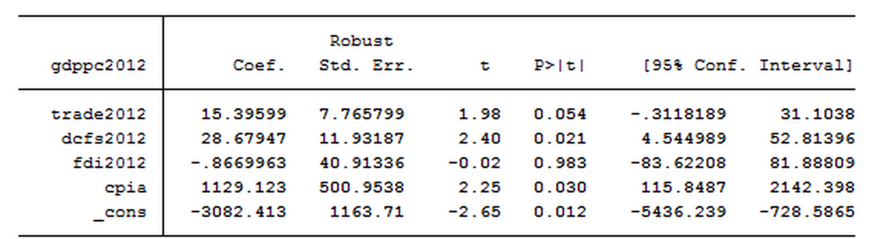

Executive Summary:
To address the goal of 7% annual GDP growth for least developed countries (LDCs), we analyzed the infrastructure of various countries, more specifically their domestic credit, trade relationships and corruption statistics, to produce a set of recommendations that describes potential factors holding back the GDP growth of LDCs. We have used economic theory together with empirical/statistical analysis to serve as the backbone for our justification of the indicators of economic growth, putting economic reasoning behind correlations, which are insufficient on their own. We found that there are strong positive correlations between higher exports per capita and higher GDP per capita, positive correlations between higher levels of domestic credit provisions and GDP per capita, as well as a negative correlation between levels of corruption in a nation and their GDP per capita.
A least developed country (LDC), as defined by the United Nations, is one that exhibits the lowest indicators of socio-economic development. We hypothesized that a common trait amongst LDCs was a lack of existing infrastructure.
We analyzed the infrastructure of various countries, more specifically their trade relationships and corruption statistics, to produce a set of recommendations that describes potential factors holding back the GDP growth of LDCs. A lot of research is needed before one can fully extrapolate the extent of the causal factors relating to economic growth.
We have used economic theory together with empirical/statistical analysis to serve as the backbone for our justification of the indicators of economic growth -- effectively putting economic reasoning behind correlations.
We isolated the 44 LDC countries and analyzed the potential effect of a number of different indicators on the GDP growth of the country. We considered trade relationships, foreign direct investment, domestic credit provided by the financial sector, and corruption.
 The regression table, analyzing the effects of various factors on GDP, as described above.We found that trade relationships, domestic credit and corruption all have a significant on the GDP per capita of a country.
From the regression above, we see that a one percent increase in trade is predicted to result in an 15.396 increase of GDP per capita.
A one percent increase in the domestic credit results in an increase of 28.679.
Finally a one unit increase in the scale of corruption (improvement) results in an increase of 1129.123.
All three of the effects were also found to be statistically significant -- domestic credit and corruption both at the 5% level and trade at the 10% level.
The first indicator that we chose to explore deeper was trade relationships between countries.
For all of the plots below, feel free to click on them and explore them in depth in an interactive setting.

It is quite evident that the least developed countries have significantly less exports per capita.

We see an even more magnified trend of countries with lower GDP having less exports.
The figure below, is one that we find incredibly interesting and vital to the justification of our recommendations. The figure is a correlation matrix mapping the exports/imports of LDCs/non-LDCs. The values are all normalized by the GDP of the exporting country.

The highest square is the top right, which says that 7% of the annual GDP of a non-LDC comes from exports to other non-LDC, while the bottom right says that 3% comes from exports to LDCs. For LDCs, on the other hand, only 0.2% comes from exports to LDCs and almost none comes from exports to non-LDCs.
Despite the fact that non-LDCs, most likely have the largest purchasing power, LDCs are making a negligible profit from exports to non-LDCs in terms of total GDP.
Below is a map displaying the GDP per capita around the globe.

This map can be compared to the one below, which shows a general overview of the intensity of corruption around the world, as measured by the Corruptions Perceptions Index (CPI). The CPI currently ranks annually based on their perceived levels of corruption on a scale from 100 (very clean) to 0 (highly corrupt).

While many countries seem to have a low corruption index (i.e., more corrupt), it should be noted that almost all of the LDCs do. The most corrupt countries also tend to have lesser GDPs, although this trend appears to fall apart below a certain threshold of the corruption index.

The highest GDP per capita countries are the ones that are the least corrupt, which suggests that infrastructure that helps deal with corruption may positively impact GDP growth as well.
In our analysis we saw a clear positive relation between growth in average GDP per capita and higher levels of domestic credit provisions by the financial sector as a percentage of GDP. This is likely because economic growth is driven by consumption and investment within a country. Greater provisions of credit may allow domestic citizens to invest more easily in their own economy.
A potential course of action by the United Nations is to increase the domestic credit provided by the financial sector of LDCs, which could help set up their financial sector and credit markets so that it is easier for domestic investors to get a hand on the capital they need to grow the economy.
We also saw a strong correlation between higher exports per capita and higher GDP per capita. When countries export goods, they are selling them to foreign consumers who bring money into the country, increasing the exporting country's GDP. The opposite happens when countries import more goods than they export, thus decreasing the importing country's GDP.
Although levels of trade may vary for each country, the focus of the United Nations should be to assist LDCs in setting up long-lasting trade relationships, thereby allowing an increase in exports and thus GDP.
Finally, we see that there is a positive correlation between higher CPI and higher GDP per capita. Corruption negatively impacts important factors of economic development such as income distribution, education, social and civic capital, and domestic and foreign investments, thus dampening the country’s development, future business opportunities, and perpetuates poverty for lower income citizens.
Providing the basic necessities of a nation such as food, security, and health-care is essential for the possibility of education, income equality, and investment. The United Nations should look to provide justice and support to LDCs where corruption and war is an issue.